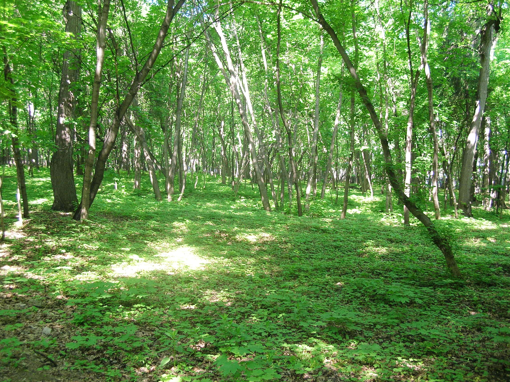
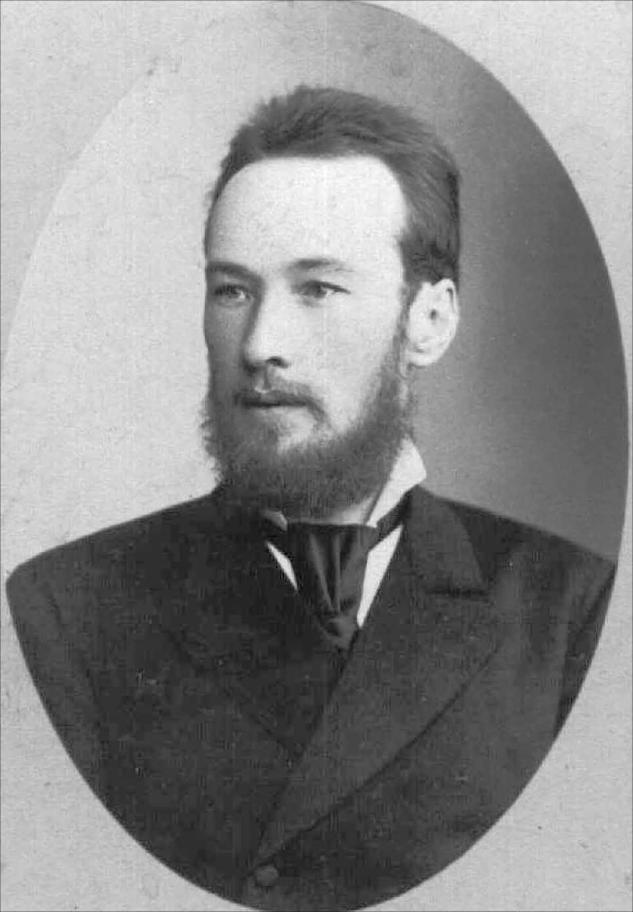

История дендропарка
Хронология событий
Почему дендропарк так называется и чей он?
Первые упоминания о местности, где сегодня находится Непейцевский дендропарк, относятся к 1591/92 году, когда в «Отводной книге по Уфе» она описана как покрытый густым лесом участок с «засеками», то есть запретными для вырубки лесами.
С середины XVII века здесь начинают появляться первые документально зафиксированные владельцы. В 1648 году в Уфу прибывает Василий Никитич Непейцын, ставший родоначальником местной ветви дворян Непейцыных; он получает поместье на Белой площадью 25 четей (около 14 га). В конце XVII века соседними крупными землевладельцами были дворяне Аничковы, владевшие огромным массивом леса — около 700 четей (382 га).
К XVIII веку территория начинает дробиться между несколькими помещичьими родами, упоминаются следующие: Непейцовы, Аничковы, Лопатины, Щеголевы и другие. Весь район известен как «Пустошь Непейцова» — слово «пустошь» в те времена означало не пустырь, а незаселённый, в основном лесной участок. Именно тогда появляется небольшое поселение «полсельца Борисова, Кособрюхова тож», которое в начале XIX века станет ядром будущей деревни Непейцево. Важно подчеркнуть: это небольшое сельцо ещё не имеет отношения к территории будущего дендропарка, а располагается южнее, у подножия горы.
В наши дни закрепился миф о том, что Осип Тимофеевич Непейцев якобы заложил дендропарк в 1811 году. Однако О.Т. Непейцев не был ботаником, садоводом или исследователем, его хозяйство находилось не на территории будущего дендропарка, никаких посадок 1811 года, тем более экзотических деревьев, не существовало.
Ключевым событием стала передача участка у родника возле сельца в приданое Дарье Константиновне Куроедовой, вышедшей в 1835 году замуж за Ивана Васильевича Базилева, директора Оренбургских народных училищ. Первоначально земля была пустой, но в конце 1840-х — начале 1850-х годов супруги Базилевы сооружают здесь усадьбу с большим бревенчатым домом. Поселение получает название «Подгорное Борисово при роднике». Межевание 1860 года уточняет его границы; к этому времени вокруг уже формируется сеть усадеб и участков разных владельцев, а сельцо впервые фиксируется под названием Непейцево. Тем не менее сама деревня никогда не находилась в собственности Базилевых — их владение начиналось севернее и включало нынешнюю территорию дендропарка. К 1870–1890-м годам имение Базилевых представляет собой крупный хозяйственный комплекс с крестьянскими дворами, службами, конюшнями, домом и земельным массивом около 100–110 десятин. Хотя И.В. Базилев нередко упоминается как «любитель природы», он не являлся основателем дендропарка: садоводческие и научные работы начнутся позже, уже при его сыне, Алексее.



Эволюция дендропарка по годам
Перемещайте ползунок, чтобы узнать как выглядел дендропарк в различные десятилетия и какие растения в выбранное десятилетие были посажены, а какие погибли.